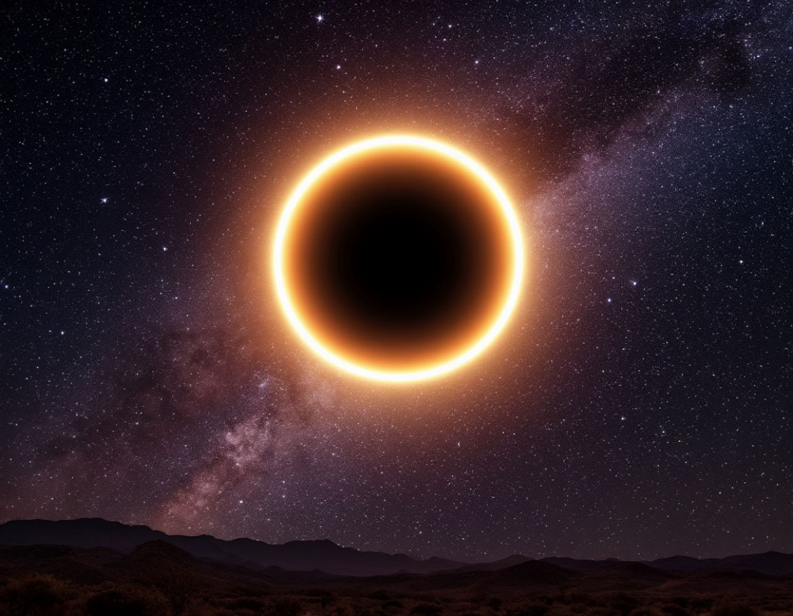

Лунное затмение
1. Как выглядит
Полная луна начинает темнеть с левого края. Сначала на её поверхности появляется буроватая тень, которая медленно наползает на весь диск. В отличие от солнечного затмения, луна не исчезает полностью, а приобретает красный, кирпичный или медно-оранжевый оттенок. Яркость и цвет могут сильно различаться: от бледно-серого до кроваво-красного. Луна висит на небе круглой, но тёмной, и вокруг неё становятся видны звёзды, которые обычно не разглядеть из-за яркого лунного света. Полная фаза может длиться больше часа.
2. История обнаружения и наблюдений
Древние греки уже в IV веке до нашей эры догадались, что затмения происходят из-за того, что Земля закрывает луну от солнца. Аристотель заметил, что тень на луне всегда круглая, и сделал вывод о шарообразности Земли. Вавилонские жрецы умели предсказывать лунные затмения за сотни лет до нашей эры — они открыли повторяющийся цикл в 18 лет (тот самый круг Сароса). В 1503 году Христофор Колумб напугал местных жителей на Ямайке, предсказав затмение, и таким образом вынудил их кормить свою команду.
3. Природа явления
Земля, солнце и луна выстраиваются в одну линию. Луна попадает в тень, которую отбрасывает наша планета. Земная атмосфера преломляет солнечный свет: синие лучи рассеиваются, а красные проходят насквозь и попадают на луну. Именно поэтому спутник не становится чёрным, а окрашивается в красноватые тона. Явление происходит только в полнолуние.
4. Связь с культурой и мифами
В Месопотамии лунное затмение считалось нападением злых демонов на бога луны Сина. Инки верили, что на луну напал ягуар, и пытались шумом и копьями прогнать хищника. В индийской мифологии затмение объяснялось тем, что демон Раху пожирает луну в отместку богам. Многие народы закрывали сосуды с водой и едой, чтобы «отравленная» во время затмения пища не навредила.
5. Условия для наблюдения
В отличие от солнечного, лунное затмение видно сразу с половины Земли — оттуда, где в этот момент стоит ночь. Смотреть можно с любой точки, нужна только ясная погода. Не требуется никакой защиты для глаз — наблюдать можно даже в городской черте, в бинокль или просто невооружённым глазом.
6. Редкость и периодичность
Лунные затмения случаются чаще солнечных: от двух до четырёх раз в год. Но полное затмение в конкретном месте можно увидеть раз в 2–3 года. Серии затмений повторяются каждые 18 лет (круг Сароса). Некоторые затмения бывают не полными, а частичными — когда луна задевает тень Земли только краем. Бывают ещё полутеневые затмения — их почти не заметно без специальных приборов.
